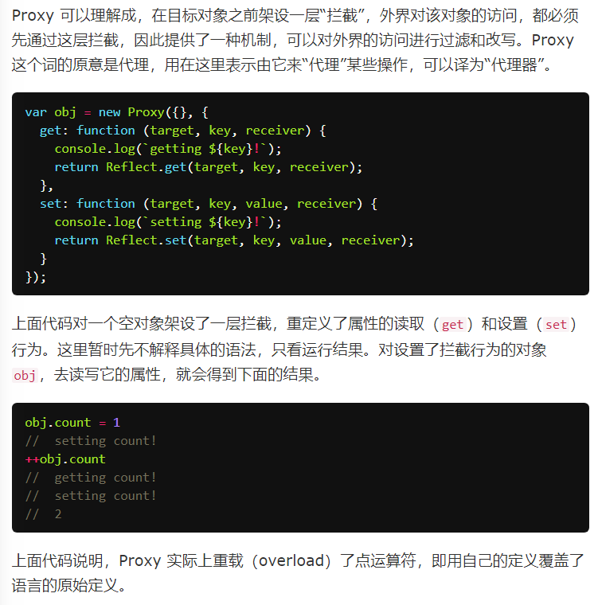

Proxy 用于修改某些操作的默认行为，等同于在语言层面做出修改，所以属于一种“元编程”（meta programming），即对编程语言进行编程。

语法：
var proxy = new Proxy(target, handler);
第一个参数是所要代理的目标对象（上例是一个空对象），即如果没有Proxy的介入，操作原来要访问的就是这个对象；第二个参数是一个配置对象，对于每一个被代理的操作，需要提供一个对应的处理函数，该函数将拦截对应的操作。
Proxy 实例也可以作为其他对象的原型对象。

支持的拦截操作：
- get(target, propKey, receiver)：属性读取
- set(target, propKey, value, receiver)：属性设置
- has(target, propKey)：拦截in操作符（propKey in proxy）
- deleteProperty(target, propKey)：拦截delete属性操作
- ownKeys(target)：拦截Object.getOwnPropertyNames(proxy)、Object.getOwnPropertySymbols(proxy)、Object.keys(proxy)、for...in循环，返回一个数组。该方法返回目标对象所有自身的属性的属性名，而Object.keys()的返回结果仅包括目标对象自身的可遍历属性。
- getOwnPropertyDescriptor(target, propKey)：拦截Object.getOwnPropertyDescriptor(proxy, propKey)，返回属性的描述对象。
- defineProperty(target, propKey, propDesc)：拦截Object.defineProperty(proxy, propKey, propDesc）、Object.defineProperties(proxy, propDescs)，返回一个布尔值。
- preventExtensions(target)：拦截Object.preventExtensions(proxy)，返回一个布尔值。
- getPrototypeOf(target)：拦截Object.getPrototypeOf(proxy)，返回一个对象。
- isExtensible(target)：拦截Object.isExtensible(proxy)，返回一个布尔值。
- setPrototypeOf(target, proto)：拦截Object.setPrototypeOf(proxy, proto)，返回一个布尔值。如果目标对象是函数，那么还有两种额外操作可以拦截。
- apply(target, object, args)：拦截 Proxy 实例作为函数调用的操作，比如proxy(...args)、proxy.call(object, ...args)、proxy.apply(...)。
- construct(target, args)：拦截 Proxy 实例作为构造函数调用的操作，比如new proxy(...args)。
====================
实例和注意点：
1.get/set方法可以（通过原型）继承；这里面有一些值得注意的问题：
设a对象的原型为一个代理对象，且设置了set和get
当我们访问一个a本身所没有的x属性时，就会顺着原型链查找
由于原型设置了set和get，x属性总是能通过原型的set和get获得结果
此时就没法通过a.x = ''的方式为a设置自身属性了
不过可以通过Object.defineProperty定义a的自身属性x并设置为可写，此后就可以正常访问和修改了
阮老师的文档没有显式地提出这一点
2.相当巧妙的一个管道设计

3.get的receiver指向原始读操作所在对象
4.阮老师：如果一个属性不可配置（configurable）且不可写（writable），则该属性不能被代理，通过 Proxy 对象get该属性会报错。、
这里其实不严谨，如果代理返回值和属性在正常情况下应当返回的值一致，是不会报错的（chrome）
而且这里是且关系，如果是不可写但是可配置，还是可以代理的
如果目标对象自身的某个属性，不可写或不可配置，那么set方法将不起作用。（这里也有错误，不可配置但可写时，set还是起作用的）
5.set可以用于数据检查/数据绑定/定义内部属性
6.apply方法拦截函数的调用、call和apply操作。可以接受三个参数，分别是目标对象（function）、目标对象的上下文对象（this）和目标对象的参数数组。
7.has方法用来拦截HasProperty操作，即判断对象是否具有某个属性时，这个方法会生效。典型的操作就是in运算符。
如果某个属性不可配置（或者目标对象不可扩展），使用has拦截就会报错。
值得注意的是，has方法拦截的是HasProperty操作，而不是HasOwnProperty操作。而且对for-in循环不生效
8.construct方法用于拦截new命令。
9.deleteProperty方法用于拦截delete操作，如果这个方法抛出错误或者返回false，当前属性就无法被delete命令删除。注意，目标对象自身的不可配置（configurable）的属性，不能被deleteProperty方法删除，否则报错。
10.defineProperty方法拦截了Object.defineProperty操作。注意，如果目标对象不可扩展（extensible），则defineProperty不能增加目标对象上不存在的属性，否则会报错。另外，如果目标对象的某个属性不可写（writable）或不可配置（configurable），则defineProperty方法不得改变这两个设置。
11.getOwnPropertyDescriptor方法拦截Object.getOwnPropertyDescriptor()，返回一个属性描述对象或者undefined。
12.getPrototypeOf方法主要用来拦截获取对象原型。
注意，getPrototypeOf方法的返回值必须是对象或者null，否则报错。
另外，如果目标对象不可扩展（extensible）， getPrototypeOf方法必须返回目标对象的原型对象。
13.isExtensible方法拦截Object.isExtensible操作。该方法只能返回布尔值，否则返回值会被自动转为布尔值。
它的返回值必须与目标对象的isExtensible属性保持一致。
14.ownKeys方法用来拦截对象自身属性的读取操作。
目标对象上不存在的属性、属性名为 Symbol 值的属性、和不可遍历的属性会被过滤
（也就是说ownKeys方法返回的数组会与目标对象现有的keys进行比对）
ownKeys方法返回的数组成员，只能是字符串或 Symbol 值。如果有其他类型的值，或者返回的根本不是数组，就会报错。
如果目标对象自身包含不可配置的属性，则该属性必须被ownKeys方法返回，否则报错。
另外，如果目标对象是不可扩展的（non-extensition），这时ownKeys方法返回的数组之中，必须包含原对象的所有属性，且不能包含多余的属性，否则报错。
=> 要求还挺严格的 - -
15.preventExtensions方法拦截Object.preventExtensions()。该方法必须返回一个布尔值，否则会被自动转为布尔值。
这个方法有一个限制，只有目标对象不可扩展时（即Object.isExtensible(proxy)为false），proxy.preventExtensions才能返回true，否则会报错。
不过可以在内部调用Object.preventExtensions(target);解决这个问题
16.setPrototypeOf方法主要用来拦截Object.setPrototypeOf方法。
注意，该方法只能返回布尔值，否则会被自动转为布尔值。另外，如果目标对象不可扩展（extensible），setPrototypeOf方法不得改变目标对象的原型。
============
有必要反思代理机制中get/set和对象getter/setter的差异和相似点
前者对所有属性进行处理，后者处理某些属性
所以阮老师某些例子中，代理中判断属性名进行处理这种方式可能在实际应用中还是使用getter/setter更直观一些
而在某些方式中，对所有属性做统一处理，此时属性名就相当于一个不可缺省的参数
=================
可取消的代理：

=================
this问题
虽然 Proxy 可以代理针对目标对象的访问，但它不是目标对象的透明代理，即不做任何拦截的情况下，也无法保证与目标对象的行为一致。主要原因就是在 Proxy 代理的情况下，目标对象内部的this关键字会指向 Proxy 代理。
必要的情况下可以手动为函数绑定this对象